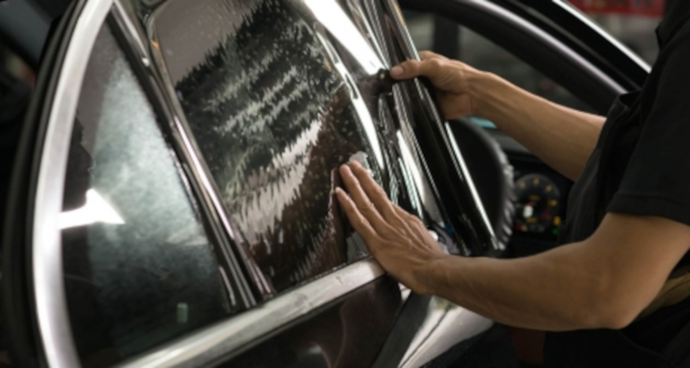
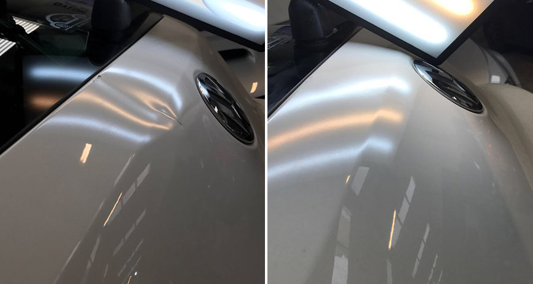
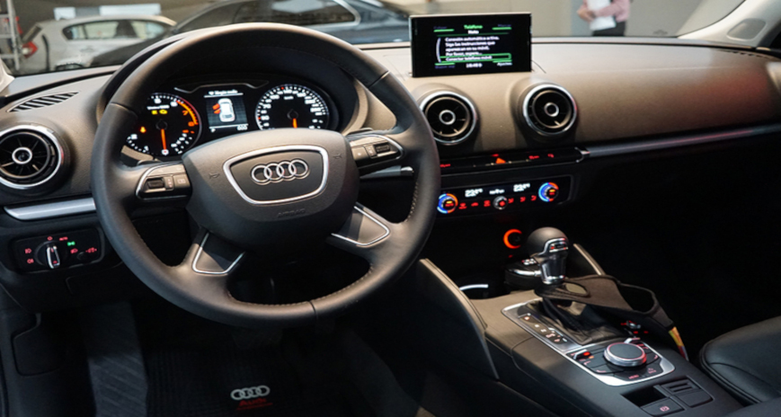

Abrillantado
En DetailMania contamos con espacios dedicados exclusivamente al servicio de detallado para nuestros clientes, aquellos quienes no siempre disponen del tiempo, el lugar o las ganas de hacerlo con sus propias manos. Con un compromiso por la excelencia y atención a los detalles, recibimos y tratamos cada vehículo como si fuese nuestro para llevarlo a su máxima expresión. Desde films de protección de pintura o PPF, tratamientos cerámicos, limpiezas de interiores, sacabollos, personalizaciones y lavados de mantenimiento.Fue en 2015 cuando nació nuestro concepto de Studio. Un lugar que rompe el paradigma de taller al que estábamos acostumbrados, incorporando diseño, tecnología, herramientas y productos de nivel premium. Un verdadero quirófano que nos permite llevar a cabo nuestros trabajos con precisión y resultados que te hacen decir #QUEDOESPEJO. Encontrá nuestras dos sucursales en Vélez y Olivos; visitanos para recibir un mejor asesoramiento en persona.
Tratamiento Acrílico
Hace lucir tu vehículo con cualquiera de estos dos servicios. Mucha gente nos pregunta cuál es la diferencia entre un tratamiento cerámico y un acrílico, básicamente está en el último paso, el SELLADOR, el tiempo de duración de cada trabajo. Un acrílico puede estar durando entre 6 meses y un año el sellador sobre la pintura y un cerámico de un año a 3 años, siempre y cuando el cliente siga los consejos que nosotros le brindamos. En este tipo de trabajos la corrección de barniz en mucho mas profunda que el el abrillantado, en el cual sacamos todas las marcas circulares o famosas “telitas de araña”
Tratamiento Cerámico
Es un revestimiento que se encarga de brindar protección a la pintura externa del coche. Protegiendo, de los agentes externos, evitando que la misma se deteriore con el paso del tiempo, aportando un excelente brillo, brinda protección contra contaminantes, como el excremento de ave, la sabia de los árboles, lluvia, rayos U.V. y el calor, protegiendo la pintura de la decoloración y brindando mayor protección contra las ligeras “marcas de amor” de los lavados inadecuados.Formado por una estructura reticular de sílice, nitruro de silicio y carburo de silicio. El revestimiento flexible, pero duradero, presenta una gran resistencia al rayado, brillo y una magnífica hidrofobia.El Grado de protección puede variar según el sellador, ya que todos ofrecen distintos grados de brillo, dureza y protección.
Polarizado
Elegimos las láminas de control solar STEK para los trabajos de polarizados en DetailMania Studio. ACTIONseries es la línea con nanocarbono, materia prima que hace el color nunca se desgaste ni se ponga violeta con el tiempo. Ofrecemos garantía de por vida.Para quienes busquen el plus de seguridad, tambien colocamos antivandalismo ACTIONsafety con las mismas propiedades.
Sacabollos
Eliminamos bollos sin dañar la pintura original.Nuestros técnicos están capacitados y entrenados con las últimas herramientas disponibles en el mercado para reparar abolladuras, sin afectar la pintura de fábrica.
Cada trabajo se realiza en forma minuciosa y por eso cotizamos cada vehículo en forma individual.
Interior
En nuestro Studio prestamos especial atención a todos los detalles. Nos encargamos de renovar el interior de tu auto usando productos y herramientas que limpian a fondo todas las superficies (plásticos en paneles de puerta y torpedos, asientos de cuero, tela, alfombras, pana y alcántara). También nos encargamos de protegerlas.
Consultá nuestras opciones disponibles para cueros y telas.